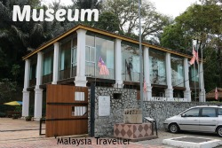
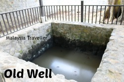
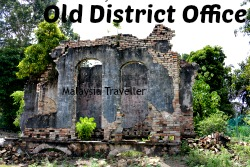
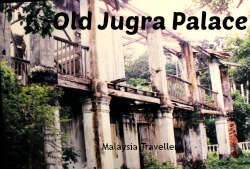
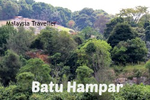

1. MUSEUM INSITU JUGRA
The Museum Insitu Jugra, housed in a magnificently renovated old police station dating from1875, is the perfect spot to start your tour of the Jugra area. This fantastic little museum, which opened in2012, includes information on all of the area's attractions as well as historical background on the police station and the restoration process.

2. THE OLD WELL OF JUGRA
The Old Well of Jugra, located at the foot of Jugra Hill about 200 metres from the museum, is one of eight wells designated in the Jugra Heritage Land Site. Again, due to a lack of signage, I was unable to locate it, although there are two wells inside the museum grounds, one of which (picture) is supposed to have existed prior to the establishment of the police station.

3. THE OLD JUGRA DISTRICT OFFICE
This ruin can still be found on the road leading up to the lighthouse, right near to the Chinese cemetery. This edifice housed a bank and a court to handle financial and legal concerns for the Jugra District during the British colonial administration. What remains of this two-story granite and brick structure, which was completed in1876, is being gradually reclaimed by the jungle.

4. THE ABANDONED & RUINED JUGRA PALACE
Sultan Sir Abdul Samad built this mansion in 1976. (1857-1898). The lower level was made of stone, while the upper level was made of wood. After the Aladdin Palace opened in1905, it was abandoned. The palace was abandoned in the 1990s after falling into disrepair. Unfortunately, I was unable to locate the ruin due to a lack of directions at the museum.

5. HANG TUAH'S FOOTPRINT - BATU HAMPAR
A modest Chinese temple near the river bank is close to the Museum. A rock with an indentation just above the temple is said to be the imprint of Malaysian folk hero Hang Tuah, according to folklore. Other footprints are claimed to exist at the peak of Gunung Datum and at Cape Rachado, indicating that he left his heavy footed tracks all across the country (Tanjung Tuan). At Jugra, I didn't take a picture of this rock because there was a bunch of territorial dogs that didn't like my presence. Maybe next time! This picture was captured not far away.6. LANGAT RIVER VIEWPOINT
A modest concrete landing on the river bank is a short distance away, from which you may see the Langat River's dark brown waters meander by. It's the kind of spot where you'd expect to see crocodiles hiding (a nearby village is called Kg. Sungai Buaya - crocodile river). The Langat River would have been a vital canal for moving people and things into and out of the interior. It runs through modern-day Putrajaya, Bangi, Kajang, Cheras, and Hulu Langat, near Gunung Nuang.7. JUGRA ROYAL MAUSOLEUM
Since the 1880s, the Selangor royal family mausoleum has been located on Bukit Jugra. The mausoleum complex features the tombs of additional family members such as Raja Muda Musa (died1884), Tengku Ampuan Maharum, and Raja Kahar, as well as the resting place of Sultan Sir Abdul Samad in Raja Abdullah, who died in 1898.8. THE BANDAR PALACE
Bandar Palace, also known as Istana Alaeddin, was erected in 1905 for Sultan Aladdin Suleiman Syah Ibni Almarhum Raja Muda Musa, the fifth Sultan of Selangor. The design of this magnificent structure is influenced by Malay, Chinese, and colonial elements. Sultan Alaeddin spent 33 years here before dying in 1938. Following independence, the palace was abandoned. For a while, it served as a craft centre and an Islamic school. In2006, it became unoccupied once more and underwent some renovations. It is now accessible to the general public. Although the structure is empty on the inside, it is certainly worth a visit. In my opinion, this is the best of the Jugra attractions.9. REMAINS OF LONG PUTERI PALACE / MAIMUN PALACE
Long Puteri was the formal house of Raja Long Puteri, Sultan Abdul Samad's granddaughter. It was in close proximity to Jugra Palace. In the 1930s, Raja Sakiah Raja Mustar lived in this palace. It was abandoned in the 1960s. It has already vanished from view due to its wooden walls, and just the 14-step staircase is believed to exist, however I was unable to locate it.